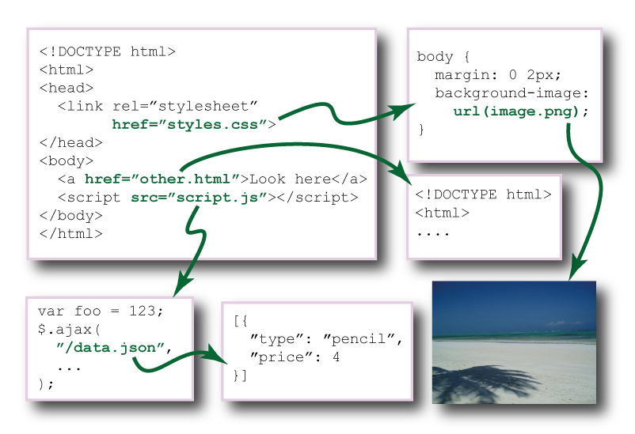

The No Build System Build System
By Peter Müller / @_munter_


No Build System
Development lifecycle
- Boilerplate / Bootstrapping
- Package manager
- Development iteration
- Build & Optimization
- Deployment
Development loop
- Editor
- Authoring abstractions
- Livereload
- Browser
Development lifecycle
- Boilerplate / Bootstrapping
- Package manager
- Development iteration
- Build & Optimization
- Deployment
Why a buildsystem?
Transport
Development code
Production code
≠
No Build System
In development
Automation
Input
→

→
Output
Configuration
Input
→
→
Output
Configuration
Input
→
→
Output

Input
→
→
Output
↓
Input
→
→
Output
↓
Input
→
→
Output
Unix tool wrappers
- Make
- Jake
- Rake
- Ant
- Maven
A website is a dependency graph
Problem:
Discovery
Problem:
Coherence
Development Anti-Patterns
File renaming
Bundling
Spriting
Compression
Deep thoughts
Lots of iterations
Use the source
Just like the browser
AssetGraph
Graph model
Discovery
Coherence

→
→
↓
→
→
↓
→
→
Enough with the theory!
How can I use it?
Do it yourself
Difficult, new paradigm
Difficult, lacking documentation
:'(
Use our tools
assetgraph-builder
grunt-reduce
TodoMVC
<Munter> I was thinking of building all todomvcs with it for demo <addyosmani> lol <addyosmani> If you're able to do anything with all the todomvcs, I'm impressed. Even a few is something <Munter> challenge accepted :)
TodoMVC-challenge
First iteration:
40% success
TodoMVC-challenge
Current status:
80% success
yabs?
Just make it work in the browser
Assetgraph
Twitter: @assetgraph
Web: assetgraph.org
Github: assetgraph
Freenode: #assetgraph
Language: Javascript (node)
License: 3-clause BSD
First commit: Dec 23, 2010
Commits: 2259
Issues: 30 / 149
Test cases: 837
Used by
Demo
... But only if I talked to fast
or skipped something
Assetgraph-builder
Building a TodoMVC app
assetgraph-builder - buildProduction
buildProduction ~/assetgraph/todomvc/architecture-examples/jquery/index.html --outroot demo
Assetviz
Generate a graph of the empirejs website
assetviz http://2014.empirejs.org
Contensecure
Autogenerate a Content Security Policy through static analysis
contentsecure http://2014.empirejs.org
Expush
Serve static assets with spdy-push using assetgraph for memcache and relation traversal
cd ~/talk/no-build-system; expush
In progress
- Website to email
- Package websites without zip
- Caching development server
- SPDY push server
- Editor with dependency knowledge